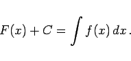
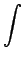

Inhalt Index DeskTop Bronstein

 Integralrechnung Unbestimmtes Integral Stammfunktion oder Integral
Integralrechnung Unbestimmtes Integral Stammfunktion oder Integral


Das unbestimmte Integral einer gegebenen Funktion f(x) ist der allgemeine Ausdruck
|  | (8.2) |
Die Funktion f(x) unter dem Integralzeichen  heißt Integrand, x ist die Integrationsvariable, C die Integrationskonstante. Es ist auch üblich, vor allem in der Physik, das Differential dx unmittelbar hinter dem Integralzeichen und damit vor f(x) zu setzen.